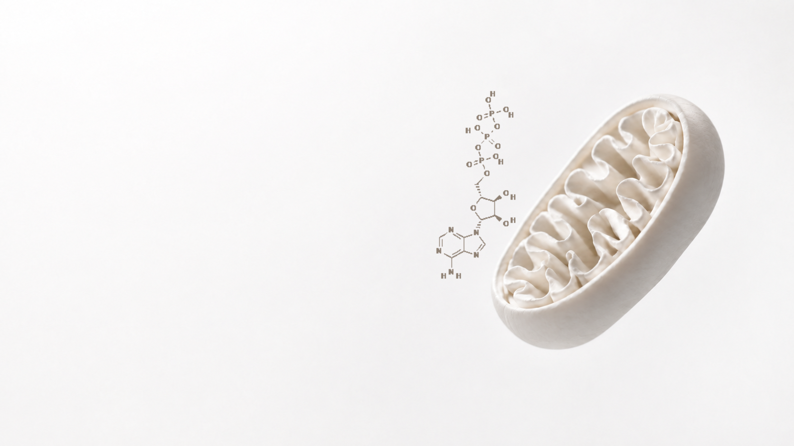

Booster programs
Pair your hormone care with the systems that amplify it. Neither replaces your protocol — each one is the reason the protocol lands.
The terrain
Balance begins in the gut — so what we rebalance actually lands, and stays landed.
Why it belongs here
01
Oestrogen leaves the liver bound and inactive, and heads for the gut.
02
There, certain bacteria carry β-glucuronidase — the enzyme that unbinds it again.
03
Unbound, it re-enters circulation. Too little activity and levels fall short of the dose; too much and they overshoot it.
04
So we read the terrain before we adjust the dose — and the same dose starts behaving.

The machinery
Mitochondrial support layered over your protocol — energy built at the cellular level.
Why it belongs here
01
Every instruction a hormone gives is paid for in ATP — made here, and nowhere else.
02
Perimenopause thins that machinery — fewer mitochondria, working less cleanly.
03
Which is how a protocol can be correct on paper and the afternoon still disappears.
04
So we rebuild the machinery alongside the hormones, and the day comes back with them.
In practice
Step one
A booster is only worth adding once we can see what it is correcting. Labs first, always.
Step two
Your hormone plan does not change to accommodate a booster. The booster is chosen to fit the plan.
Step three
Long enough for the terrain to move, short enough to correct course before a season is lost.
Start with a free 10-minute discovery call — Irina will listen, and point you to the right one.
Book the call →